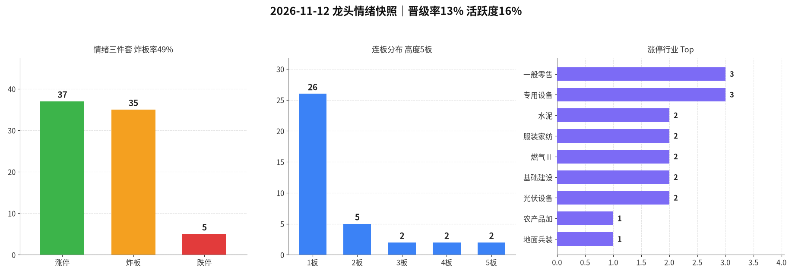

交易日 2026-11-12（周四） · 目标交易日 2026-11-13（周五） · 退潮·算力中军熄火
情绪：退潮 涨停 37 · 跌停 5 炸板率 48.6% · 晋级率 13.1% · 高度 5板| 票 | 昨动作 | 今收盘涨跌幅 | 判定 |
|---|---|---|---|
| 算力中军（剑桥/东山/光迅/深南/景旺/长飞/英维克） | 只观察（可升级） | 剑桥+5.04%（竞价+7.82%不追，炸3）；东山+1.77%（竞价+2.22%符合，未晋级）；英维克−5.40%；光迅−0.63%、长飞−3.22%；深南+1.01%、景旺+3.74%炸3 | 对（纪律：默认观察） |
| 001339 智微智能 | 只观察（不升级） | −9.19%（竞价−2.50%） | 对 |
| 汽车零部 | 不加 | 华培−4.01%、金杯−5.76%、光洋−5.60%；天普+10.00%但额仅1.27亿、炸2 | 对 |
| 高度杂毛 | 不加 | 日出+10.03%（竞价+5.26%、炸7）；大东方+9.95%（14:56才封）；文投−1.59%；锋龙开一字收+6.63%炸6 | 对（纪律） |
| 旧主线残留 | 不加 | 通富+5.36%炸3、协鑫+6.97%、华创+1.99%，未形成连板主线 | 对 |
一句话：默认只观察、不加的纪律都对——算力中军全部未晋级，主线切换失败；天普脏3板量能过小不算反例。改进（未回测）：启动分歧后的新主线若仍停在首板，次日即使竞价≤3%也默认不升级，须开盘后封板与跟风同步确认。
涨停 37（周三84↓腰斩）、跌停东财池 5（周三0↑回升，乐咕6）、晋级率 13.1%（周三20.4%再降）、炸板率 48.6%（周三18.4%↑明显飙升）、乐咕活跃度 16.04%（周三64.71%↓崩塌），红盘约 16.0%。指数收弱（上证 −0.67%、创业板 −2.44%、中证1000 −1.97%），两市放量约2558亿却是下跌放量。昨切换的算力硬件中军全部未晋级，涨停池成交额从约928亿掉到约291亿。连板高度到 5板，但都是非主线杂毛（日出东方炸7、大东方14:56才封）。定性 退潮：不是高潮后的拥挤破位，而是启动分歧次日主线熄火、亏钱效应铺开。跌停刚到5家，尚未到11/6那种双位数加深，但炸板率已经更差。默认空仓，禁追高度、不回流熄火主线、不抄跌停。
今日为退潮，且炸板率明显飙升、跌停从0回升到5、主线资金撤出，触发情绪→路线2风险过滤。
| 指标 | 数值 | 备注 |
|---|---|---|
| 涨停家数 | 37 | 已剔 ST / 北交所；东财 raw37=clean37；乐咕涨停=37、真实涨停=31 |
| 跌停家数 | 5 | 东财跌停池5（得邦照明、煌上煌、中坚科技、上海电影、福莱新材）；乐咕跌停=6、真实跌停=6（ST跌停1），以东财池为主 |
| 炸板家数 | 35 | 炸板池 clean35（与涨停几乎1:1） |
| 炸板率 | 48.6% | 炸板/(涨停+炸板)=35/72；较周三18.4%明显飙升 |
| 连板高度 | 5板 | 日出东方（炸7）、大东方（14:56封）；均非主线 |
| 连板结构 | 5板 2 / 4板 2 / 3板 2 / 2板 5 / 1板 26 | 4/3板为亚玛顿一字、东方环宇、惠发、天普（额仅1.27亿） |
| 昨日涨停数 | 84 | previous 池 clean，raw85→clean84（剔北交所宇特光电） |
| 晋级数 / 晋级率 | 11 / 13.1% | 口径同前：previous∩今日涨停池 |
| 高度/主线样本 | 算力中军零晋级（剑桥/景旺炸板，东山收+1.77%未封，英维克−5.40%，智微−9.19%）；晋级11家全是非主线杂毛 | |
| 两市成交额 | 约 19321亿（新浪：上证≈8795.4 + 深成≈10525.4；周三约16763↑，放量约2558，下跌放量） | |
| 涨停池成交额 | 约 291亿（仅涨停标的，周三约928↓；额子散在东方海洋/大东方/长城军工/日出东方等杂毛） | |
| 红盘占比 | 约 16.0%（乐咕上涨838 / 下跌4320 / 平盘60；活跃度16.04%） | |
读表一句话：涨停腰斩、炸板率近五成、红盘只剩16%、昨主线中军全灭 = 退潮。高度杂毛继续板不改变这个判断。

附图：涨停 / 炸板 / 跌停柱状 + 连板分布 + 行业集中（emotion_20261112.png）
5板：日出东方（竞价已+5.26%、炸7）、大东方（尾盘才封），非同题材，不加。
4板 / 3板：亚玛顿一字额约0.39亿、东方环宇、惠发食品、天普股份（炸2，额仅1.27亿）——不加。
汽车零部仅剩天普3板，襄阳炸4收+3.54%，华培−4.01%、金杯−5.76%、光洋−5.60%，定位不变：不加。
上海电影（昨午后2板）今日直接跌停，成交约19.5亿；文投控股炸8收−1.59%；福莱新材跌停（约30.0亿）。辅线不是避风港，不抄跌停。
主线判断依据 = 涨停池成交额集中度 + 封板质量 + 晋级质量；高度杂毛续板、个别脏首板放量，都不能当成新主线。
情绪 = 退潮 → 专项总仓建议 0%（默认空仓，未回测）；同时持仓建议 0 只；不追5板杂毛、不回流已熄火的算力中军、不抄跌停、不把散乱干净首本当试错。
| 动作 | 空仓观望（默认） |
|---|---|
| 进场 | 无。周五竞价若昨涨停大量低开＞5%，或跌停继续扩散、炸板率仍高 → 全天不交易 |
| 仓位 | 0% |
| 原因 | 涨停腰斩、炸板率近五成、红盘16%、昨主线中军全灭；退潮日优先保命，不在高度杂毛或熄火主题上试错 |
| 作废 | 仅当盘中出现「新板块≥8家早盘干净首板、炸板率明显回落、跌停收窄」才允许把指令2升级为极轻观察（否则维持空仓） |
| 标的 | 周五盘中新确认的「板块集中≥5家、早封未炸」首板（今日尚无合格主线，不点名追龙建/广百/长城军工等散板） |
|---|---|
| 动作 | 只观察 / 默认不加 |
| 进场 | 无开仓。记录竞价与封板质量，供退潮后再议 |
| 仓位 | 0% |
| 原因 | 今日行业散乱，避免把零售/军工/基建单个首板当成新主升 |
| 标的 | 剑桥科技 / 东山精密 / 光迅科技 / 深南电路 / 景旺电子 / 长飞光纤 / 英维克 / 沪电股份 / 源杰科技 / 智微智能 |
|---|---|
| 动作 | 不加（若昨按可升级条款开了极轻仓 → 反抽减/清，不补） |
| 仓位 | 0% |
| 原因 | 切换后的新主线首板次日全部未晋级，主题龙头中际旭创/新易盛同步收跌；退潮期不二次试错同一熄火主题 |
| 标的 | 日出东方 / 大东方 / 亚玛顿 / 东方环宇 / 惠发食品 / 天普股份 |
|---|---|
| 动作 | 不加 |
| 仓位 | 0% |
| 原因 | 高度都不在主线，且多数炸板多次或尾盘/一字；退潮期即使继续板也不接力。若竞价打开后直线砸 → 强化全天空仓 |
| 标的 | 北纬科技 / 日上集团 / 天安新材 / 中重科技 / 东方海洋（炸26）/ 长城军工，以及任何炸板≥4次回封票 |
|---|---|
| 动作 | 不加 |
| 仓位 | 0% |
| 原因 | 退潮日更要避开脏板；放量脏回封不是中军 |
| 标的 | 上海电影 / 福莱新材 / 中坚科技 / 煌上煌 / 得邦照明 |
|---|---|
| 动作 | 不加 / 不抄底 |
| 仓位 | 0% |
| 原因 | 跌停刚扩散，抄跌停不是退潮策略；上海电影是昨辅线2板今日直接砸死，更不能当超跌反弹 |
20261112；乐咕活跃度交叉（统计至15:00）；个股与两市成交额来自新浪。晋级口径与此前一致（previous∩当日涨停池，11/84）。东财跌停池记5，乐咕显示跌停6（真实6，ST跌停1），已注明。数字见 data/*_20261112* / metrics_20261112.json。未编造。